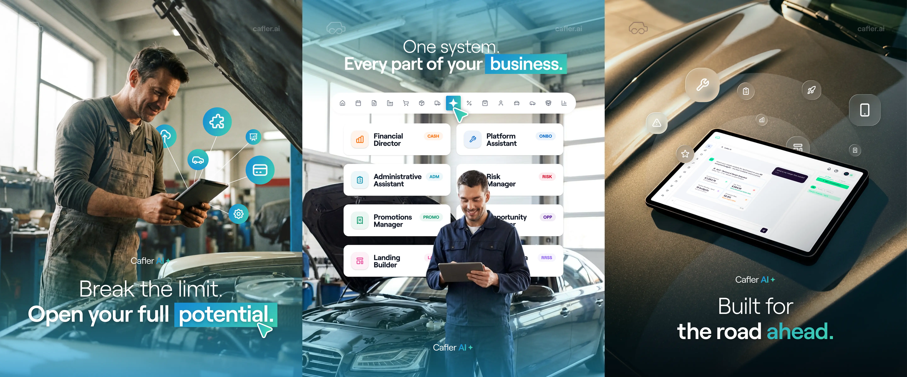
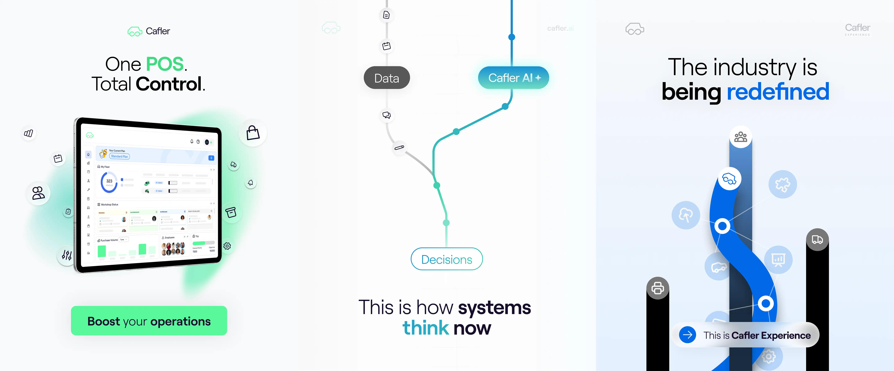

Cafler started as a B2B mobility platform connecting workshops, dealerships, and fleet managers across Europe. In early 2026, the company pivoted to become an AI-powered aftersales platform — a significant shift that required rebuilding the entire brand communication from the ground up.
I joined as Junior Graphic Designer & Video Content Creator at the start of this transition, becoming part of a small creative team within Marketing. My work reached every market Cafler operates in: Spain, Portugal, France, UK, US, LATAM, and Asia.
My role covered the full creative spectrum — from day-to-day brand assets to high-production video projects. On the design side, I was responsible for sales presentations, dossiers, social media content, merchandise, and simplified UI mockups of the platform built in Figma for sales purposes. I also ran email campaigns in Mailchimp and handled internal photography, shooting and retouching team portraits with professional equipment.
On the video side, I produced motion graphics animations of the platform used in live events and sales demos — including a presentation for Point S, one of Europe's largest automotive service chains, and demo content delivered directly to Volkswagen Group (VGED). As the brand evolved into an AI product, I led the visual production of the new brand content campaign currently rolling out across all markets.
I also contributed to an unreleased internal project — one of the most ambitious and personal pieces I worked on at Cafler.
Working across seven international markets meant constant collaboration with Sales, Product, and People teams — adapting creative output to different audiences and contexts while maintaining visual consistency across the brand.

